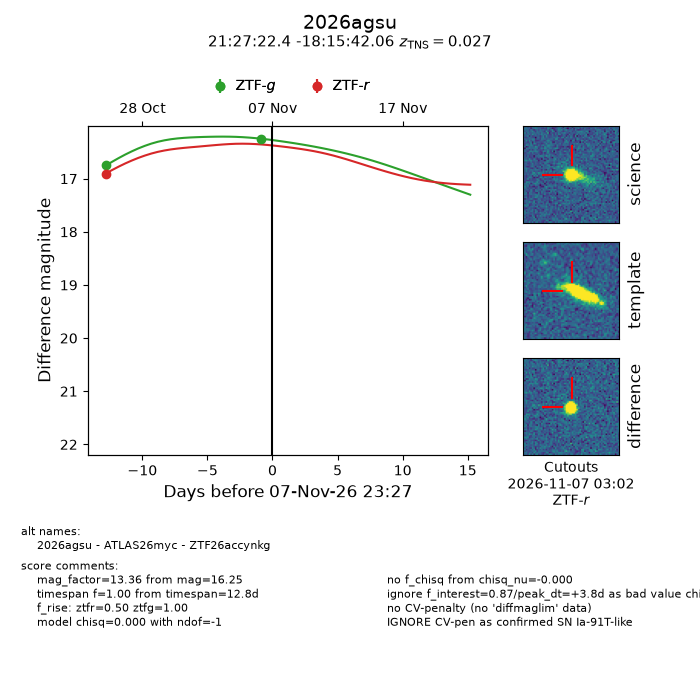
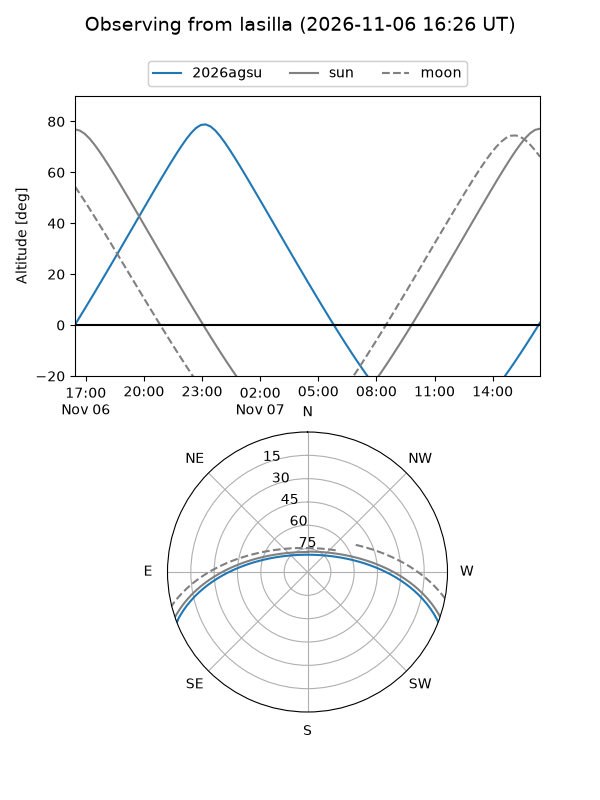
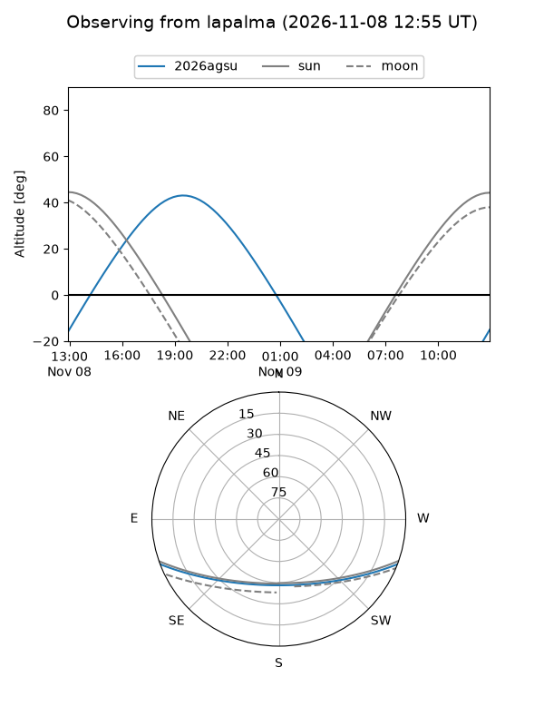
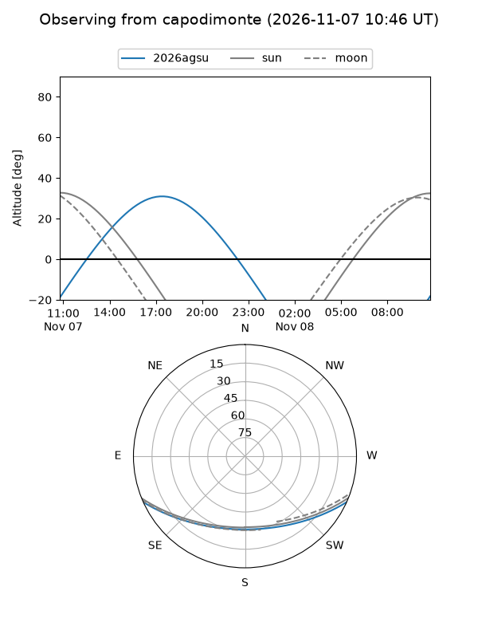
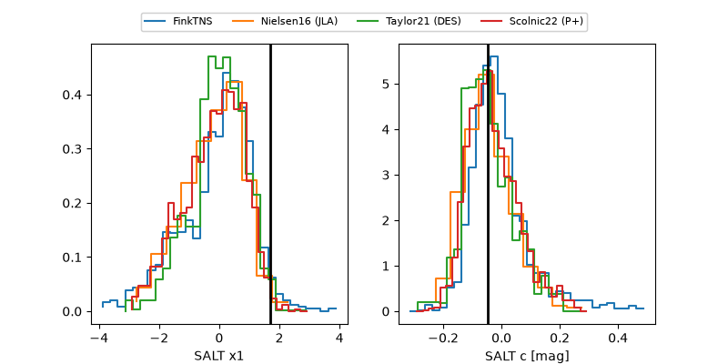

2026agsu
Target 2026agsu at 2026-11-07 23:29
Aliases and brokers:
FINK-ZTF: ztf.fink-portal.org/ZTF26accynkg
Lasair-ZTF: lasair-ztf.lsst.ac.uk/objects/ZTF26accynkg
ALeRCE-ZTF: alerce.online/object/ZTF26accynkg
YSE-PZ: ziggy.ucolick.org/yse/transient_detail/2026agsu
TNS name: wis-tns.org/object/2026agsu
Direct TNS query: direct search
alt names
ZTF26accynkg (ztf,fink_ztf)
2026agsu (tns,yse)
ATLAS26myc (atlas)
Coordinates:
equatorial (ra, dec) = 321.8434,-18.26168
equatorial (HMS+DMS) = 21:27:22.41,-18:15:42.06
galactic (l, b) = (32.4296,-42.42156)
Flags:
TNS type: SN Ia-91T-like
TNS redshift: 0.0270
peak dt: +3.8
Photometry:
last ztfg=16.25, ztfr=16.90
2 ztfg, 1 ztfr detections
Lightcurve

Visibility



Additional plots
